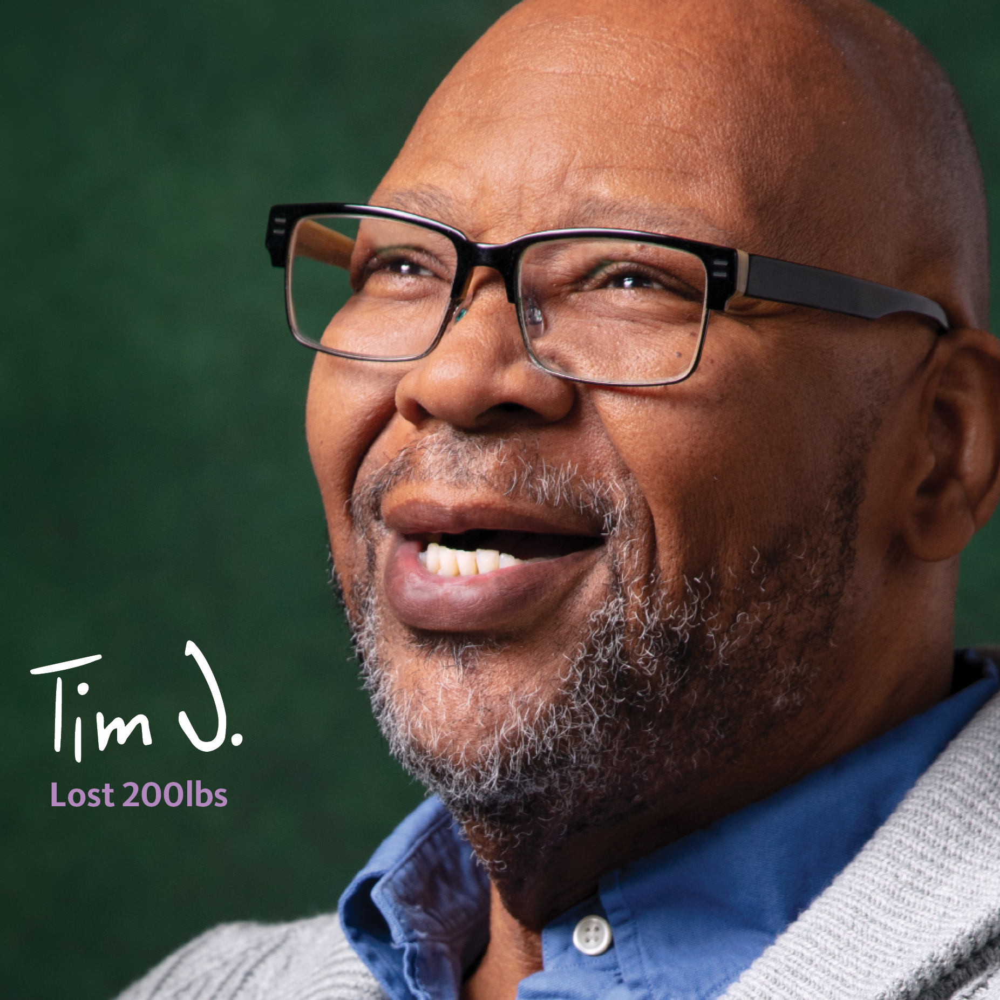
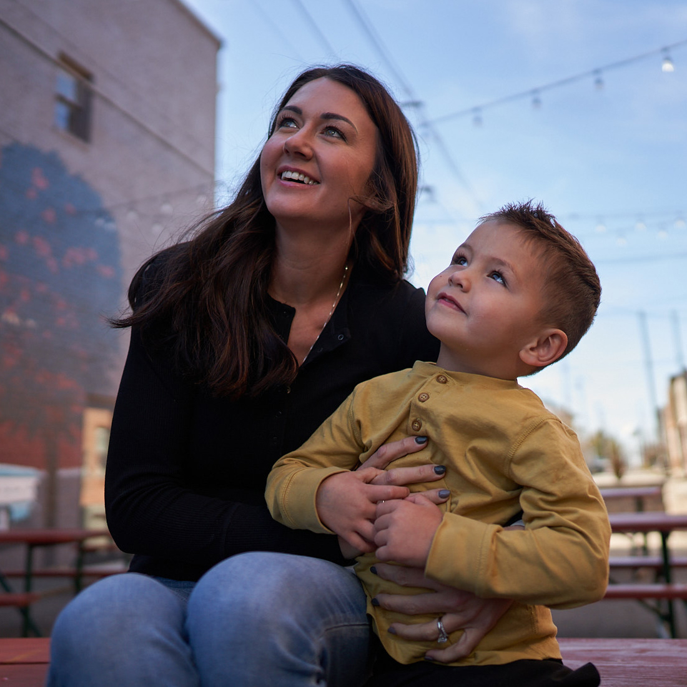

I’m a Full-Stack Designer who grew up in the world of traditional studio art before transitioning to experience and systems design. I transform complex concepts into scalable, documented systems. Most of my day is spent bridging the gap between design and technical execution, leveraging AI to drive unified outcomes and helping my team navigate complex workflows.

To support the broader growth objectives of the Sparrow Health System, the bariatric service line required a complete digital transformation. The legacy platform, ThisTinyScar.com, lacked the technical flexibility to serve as an evergreen resource and failed to convert visitors into prospective patient leads.
The strategy centered on a complete structural overhaul, transitioning the platform into a scalable system designed for lead capture and brand unity. Future key decisions would be informed by an audit of the existing platform.
The audit identified opportunities to refine the user experience across four key pillars: content, navigation, visual design, and usability. These findings informed a strategy centered on transforming the site into an informative, reassuring resource by moving away from video-heavy reliance and toward scannable, data-backed content. Key focus areas included clarifying clinical data, normalizing weight loss surgery through research-backed articles, and creating a logical information hierarchy that follows a prospect’s specific thought process.
With these strategic findings as a blueprint, the focus shifted to optimizing engagement through enhanced navigation and accessibility. This involved implementing consistent link functionality, enlarging mobile touch targets, and strategically placing call-to-action (CTA) labels to set clear user expectations. Visually, the solution reduced cognitive load by simplifying text and utilizing purposeful imagery featuring real patients and providers. Additionally, critical information, such as cost and insurance coverage, transitioned from video format to scannable content to enable easier discovery. During the final UI phase, the core brand identity was integrated into a modular, component-based system to ensure long-term scalability.
Following the acquisition of Sparrow Health System by University of Michigan Health in late 2023, the site underwent a successful rebrand; however, the core UX architecture and content strategy continue to drive performance today.
The redesigned Sparrow Bariatrics website received a Platinum Award for Best Microsite at the 2023 eHealthcare Awards.
As a leader in value-based kidney care, Interwell Health required a digital presence that mirrored its sophisticated approach to patient management. The existing interface failed to meet the content needs of payers, providers, and patients; and lacked the visual direction to support growth. To overcome these obstacles, the organization required a redesign that could communicate value to diverse stakeholders while adhering to modern accessibility standards.
The approach centered on delivering a modular platform designed to prioritize scannable content and streamlined user flows. This process integrated impactful visual design, easy-to-digest language, and strict accessibility standards to ensure a seamless experience for providers, physicians and patients.
The transformation began by restructuring the site’s information architecture to prioritize clarity and future-proofing. Navigation was distilled into three high-level pillars; Who We Serve, Who We Are, and What We Offer, replacing industry jargon with straightforward language. This simplified taxonomy optimized the user journey and established a framework for adding new service lines as the organization scales.
Following the approval of the IA, the visual approach was established through style tiles, evoking a modern, high-trust brand identity. This new identity was then translated into a comprehensive design system utilizing an atomic methodology. To support a demographic that skewed older, Source Sans Pro was selected for its readability, paired with a 1.125rem base for body copy and high-contrast color palettes to ensure WCAG-compliant accessibility. In coordination with the wireframing phase, core components were identified and designed as modular units, ensuring a streamlined user experience. This approach concluded in a high-fidelity UI that translated complex information into an approachable, data-driven experience.
To facilitate a successful migration to the Sitecore platform, architectural and strategy efforts involved the development team from the earliest phases. A structured handoff process supported by detailed component documentation ensured the functional integrity of the design was maintained throughout the build.
The modernization of the digital ecosystem resulted in a highly scalable framework that remains a living tool for organizational growth. Since the initial launch in April 2023, the underlying design system has proven its extensibility by supporting the rapid development of sub-branded product pages, including Interwell Learning and the Interwell Provider Network. This data-driven foundation has effectively modernized Interwell Health’s storytelling and provided the necessary framework for continued expansion.
Successfully audited and updated 100+ legacy components to meet modern performance and accessibility standards, achieving a consistent 100% WCAG compliance rating.

Reid Health faced a dual challenge. Their legacy consumer site and the employment-focused BeReid.com operated as separate entities, creating confusion for users to navigate between seeking care and seeking employment.
From a technical standpoint, the existing platforms lacked modern healthcare features, such as integrated Epic workflows and suitable Find-A-Doctor tools. Additionally, a patient population of rural audiences with varying levels of broadband access required a mobile-first interface and WCAG-compliant design standard, which their legacy site did not deliver.
The transformation focused on a headless Sitecore XM Cloud implementation, supported by a comprehensive UI/UX overhaul. The strategy prioritized a mobile-first mentality, ensuring that the significant portion of the audience accessing the site via mobile devices would be offered the same experience as those who did so via traditional desktop.
The strategy centered on assessing existing research and stakeholder requirements to create a uniformed information architecture. By mapping diverse user journeys, the new IA eliminated redundancies and established streamlined paths for essential actions, such as scheduling clinical appointments or navigating the recruitment portal.
As a community focused health system, the digital identity prioritized simplicity, consistency, and regionality. The visual direction began with the development of style tiles to explore the existing earth-toned brand palette. Because the audience relied heavily on mobile access, the exploration focused on high-legibility typography:
The design integrated a ginkgo tree, a historical symbol planted at the organization’s founding in 1905 into various backgrounds to ground the interface in local heritage. The interface prioritized significant white space to maintain organization, while interactive molecular elements—including buttons, cards, and accordions were engineered for accessibility. Locally sourced community photography was featured to enhance trust with the community.
The redesigned Reid Health platform successfully transformed a fragmented digital footprint into a unified, data-driven experience. By consolidating the health system and employment sites, the organization achieved a "single source of truth" for its brand.
The move to Sitecore XM Cloud provides a scalable foundation that supports long-term business expansion, while the modular UI ensures that the digital team can react to market changes with agility. Most importantly, the focus on a mobile-first, accessible design ensures that all community members—regardless of their device or location—have equitable access to essential healthcare information and career opportunities.
Scheduled for a March 2026 launch, this project represents a fundamental shift in Reid Health's digital strategy toward a unified, high-performance ecosystem.